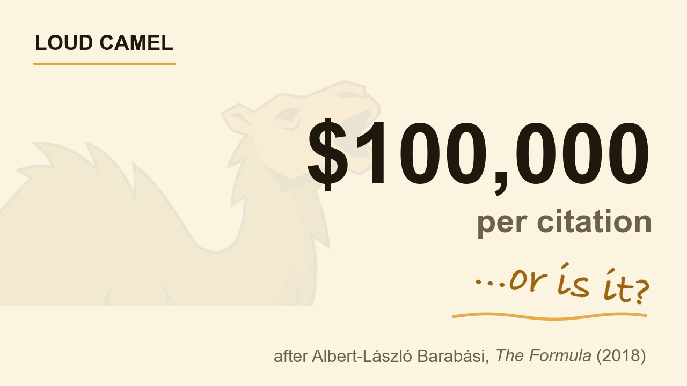

Where is my $400,000?
Do AI researchers know what a citation is worth? Do economists, the people who literally study what things are worth? No. They write for the science, the result, the next question. The price of a citation never comes up.
Do you know what your citation is worth?
No. Nobody told you, because you were busy doing the work.
Albert-László Barabási put a number on it. In his 2018 book The Formula, he treats citations as currency and sets an exchange rate: take what the United States spends on research, divide by the citations that money produced, and you land at roughly $100,000 per citation.

Since I launched Loud Camel, a tool that helps researchers get cited and recognized, I have picked up four new citations. So where is my $400,000?
Why the $100,000 citation is an average, not a price
It is an average, and a treacherous one, because it sits on top of one of the most lopsided distributions in science. Citations follow a power law. Most papers are cited well below the mean, a large share are never cited at all, and a small elite collects the bulk of the total. An average over that shape tells you about the elite, not about you. It is the street where everyone is a millionaire on paper because Bezos just moved in.
The skew is also getting worse. Mathias Wullum Nielsen and Jens Peter Andersen, writing in PNAS in 2021 across 4 million authors and 26 million papers, found the top 1% of scientists lifted their share of all citations from about 14% to 21% between 2000 and 2015, with the Gini coefficient rising from 0.65 to 0.70. The detail that matters: over the same years the elite’s citations per paper actually fell, from 3.10 to 1.79. Their share grew while their per-paper impact shrank. Concentration tracks position and volume, not better science.
Does the money side hold up at all?
Partly, and it is only fair to say so. Funding does buy citations: an instrumental-variable study of China’s National Natural Science Foundation found competitive grants raise both the output and the citation impact of the work. Public research earns large real returns to the economy through spillovers. So Barabási is not inventing value out of nothing.
But two things puncture the tidy $100,000. First, the dollar figure is an average over the whole national bill, not the price of your marginal citation. Second, the citation is a weak and gameable yardstick: counts and impact factors are inconsistent predictors of research quality, and once a number becomes a target, paper mills, citation cartels, and self-citation rings move in. Goodhart’s law does not exempt scholars.
So whose citation is worth $100,000?
Not the average researcher’s, because the average is a fiction the giants create. The value of your next citation is decided by where you sit in a distribution that is getting steeper every year, and position there is set less by how good the work is than by how many of the right people ever find it.
So I will end where I started, with a question. Whose citation is actually worth $100,000? And what are you doing this month to make yours one of them?